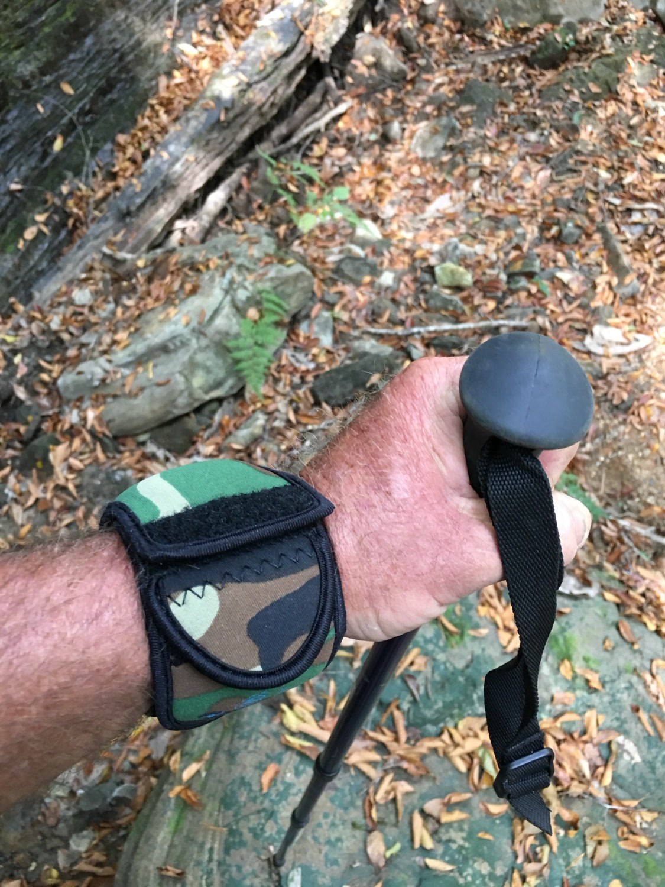

From the blog
Ruck Hard and Keep Your Watch Covered
October 27, 2026

Rucking is supposed to be hard on you, not on your watch. Miles under a loaded pack, steep ground, and long days outside add up fast. A watch that rides bare will take hits you never notice until you get home and see the marks. The good news is simple. A little cover before you step off keeps your watch in the fight for the next ruck, and the one after that.
1. Pack straps rub the case all day long
Every step shifts your pack a little. That shift drags straps, buckles, and fabric across your wrist again and again. One mile of rubbing is nothing. Ten miles of it will dull a finish and wear down edges. A neoprene sleeve puts a soft layer between your watch and all that movement. Your pack still rides the same. Your watch just stops paying for every step.
2. Trekking poles and busy hands cause surprise hits
Rucking keeps your hands busy. You plant a pole, grab a rock, adjust a strap, or catch yourself on a slope. Each move can swing your wrist into something hard. Poles, rocks, and branches do not give way. A sleeve with a flap over the face takes those knocks so your crystal does not have to. You keep your pace. You keep your grip. The watch stays guarded.
3. Sweat, dust, and rain wear a watch down
A long ruck means sweat from start to finish, plus dust on dry trails and rain when the weather turns. Sweat leaves salt behind. Dust works into small gaps. Rain soaks everything and then dries in place. None of that ruins a watch in one day, but it adds up over a season. A sleeve helps shield the watch from that steady grime, and it wipes clean when you get home.
4. Falls and rough ground are part of the trail
Nobody plans to fall, but loose rock, wet roots, and tired legs make it a real part of rucking. When you catch yourself, your wrist is often the first thing to hit the ground. That is a bad moment for a bare watch. A padded sleeve softens that impact and spreads it out, so a stumble does not turn into a cracked crystal or a gouged case. Get up, shake it off, and keep moving.
5. Cover it before you step off, not after the damage
The easiest habit is the one you do at the trailhead. Slip the sleeve on, close the flap, and forget about the watch until you are done. You can still check the time when you need it, and the side pocket holds small essentials close at hand. When the ruck is over, take the sleeve off and your watch looks the way it did at the start. That is the whole point. Train hard. Your gear should last.
Rucking rewards people who show up ready and keep going when it gets tough. Your watch should be ready too. Cover it, ruck hard, and bring it home in the same shape you took it out in.
Tired of babying your watch?
Medium $23 fits watches up to 48mm. Large $25 fits up to 53mm. Five colors.
Order Yours More Tips